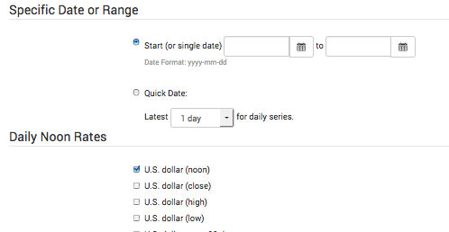

DIY Canadian: How-To Guides for Canadians
DIY Canadian: How-To Guides for Canadians *this page is not relevant for anyone that only holds investments in a TFSA account as ACB does not need to be calculated for a TFSA
Q: What is ACB?
ACB stands for adjusted cost base (aka adjusted cost basis) and is essentially the average price you have paid for an ETF to date (adjusted for all transactions). It is important to note that the ACB represents the cost base (total cost of your investment adjusted for distributions) per share. ACB is the cost of purchases divided by the total units held (cost per share). It is important to know the ACB when you sell units of the ETF because the capital gains tax that you will pay upon selling these units is based on the ACB. Therefore, the ACB is only important for ETFs that you hold in taxable accounts (not important for ETFs in your TFSA or RRSP). Since the ACB is based on the adjusted COST base, it only involves the COST of buying units and does not change when you sell units. You might be thinking to yourself that ACB sounds a lot like the 'book value'. You would be right. However, it is not your brokerage's responsibility to keep track of your ACB and the book value is often not tracked accurately (although it should be equivalent to ACB) so it should not be trusted. After making the initial purchase for your ETF, the ACB can be affected by additional purchases (with commissions), dividend reinvestments, return of capital, splits (fairly rare) and non-cash reinvested distributions (aka phantom distributions such as reinvested capital gains). Your brokerage is unlikely to adjust the book value for reinvested capital gains distributions and return of capital.
Q: Why do I need to calculate ACB?
If you don't keep track of your ACB, you will likely end up paying extra tax on your ETF units when you sell them (excluding a TFSA since you won't pay any tax on the money that you make in a TFSA). For example, you pay tax on reinvested capital gains distributions once a year when reporting the capital gain on your T3 and if you don't adjust the ACB of your ETF accordingly, you will end up paying tax again when you sell units of your ETF.
Q: When do I need to calculate my ACB?
You only need to calculate your ACB just prior to selling units of your ETFs (or other investments) and use the calculation in determining how much tax you will need to pay on capital gains. So if you are a buy and hold investor then you don't really need to calculate your ACB until that time you are ready to sell (could be decades later). However, it is much easier to keep a spreadsheet that tracks your ACB and update it once per year since it may be harder to find information you need to calculate your ACB two decades from now. Note: It is usually a good idea to wait until just before the deadline for filing taxes (e.g. April 30th for 2016 year) to calculate your ACB to allow for the most up to date version of the CDS Innovations Tax Breakdown documents.
As mentioned previously, you do not need to calculate your ACB for any investments in your TFSA.
Q: Why is there separate guides for Canadian listed ETFs and U.S. listed ETFs below?
U.S. listed ETFs actually distribute all of their distributions in cash instead of reinvesting them. This means that there will not be any reinvested capital gains (aka phantom distributions) or return of capital. All distributions made by a foreign ETF are considered foreign income and are fully taxable. Therefore, for foreign ETFs, you just use buy, sell and split transactions.
Since U.S. listed ETFs are held in US dollars, the other big difference is that ACB must be reported in Canadian dollars so you will have to convert all USD amounts (in brokerage statements) to CAD in order to do your ACB calculations. The best way to do this (especially if you use 'Norbert's gambit' for currency conversion) is to use the Bank of Canada noon exchange rate. You will not get a 'Summary of Investment Income and Expenses' like you get with your T3 for Canadian listed ETFs. Instead, you will get a T5 to use for your U.S. listed ETFs (no T3) that does not have a tax breakdown for different types of income (e.g. ROC, RCGD, etc.).
Q: What do I do when I sell an ETF in a taxable account?
When you sell an ETF (in a taxable account), this is when you will need to know what the adjusted cost base in Canadian dollars for each ETF. You will need to fill out schedule 3 of your tax return (where you report any capital gains or capital losses) for the year in which you sold the ETF units. In schedule 3, you will need to include each sell transaction separately. Your capital gains will be the dollar amount you received from your sale of the ETF units (called proceeds) minus the cost base (your cost). This information is not relevant for registered accounts (e.g. TFSA and RRSP). When you sell a U.S. listed ETF, you will use the post-currency conversion amount to calculate your capital gains. If you sell an ETF for less than you paid, then you can claim a capital loss which can be used as tax credit against other gains (overall capital gains are taxed at your tax rate).
Q: Do I need to calculate ACB for my TD e-Series funds?
It should not be necessary to track your ACB for your TD e-series funds. All of the ACB calculations should be done at the fund level and represented in the book value. However, if you want to be 100% certain that your ACB is correct, then you could track it.
However, it is important to note that you will still pay taxes if you sell your TD e-Series funds and you should factor that in your decision on how/when to sell these funds if they are in a taxable account. If you hold the TD e-Series funds in a non-registered account (meaning accounts that are not a TFSA, RRSP or RESP) and you have unreazlied capital gains (meaning you have never sold the funds but they have gone up in value) on those funds, then the only way to move the value of these funds into ETFs is to sell the TD e-Series funds to get cash and then use the cash to buy ETFs. Unfortunately, this will lead to a capital gains tax for the tax year that you sell them in since you have sold the funds and made a profit. Half (50%) of the capital gains on the sale of your TD e-Series funds will be taxed at your marginal tax rate (e.g. 32% if you are making $80,000 in Ontario), while you will not have to worry about taxes on the other 50% (effectively meaning that you paid a 16% tax on your capital gains). You will have to keep your tax rate in mind if/when you decide to sell your TD e-Series funds and move to ETFs in a non-registered account. For example, it might be better for your taxes to sell some your TD e-Series funds this tax year (and ideally look for an investment that could be sold for a capital loss to negate the gain) and do this again for the next year. If you sell everything in one tax year then all of the capital gains will be occur in the same tax year which will increase your income and move you up to a higher tax bracket. This means more taxes and who wants that! So it may be beneficial to sell investments off slowly over the course of a few years to offset any losses/gains. This is not something you need to concern yourself with if the money is in a TFSA (as there will be no capital gains tax when you sell investments in a TFSA).
Q: OK, I want to keep track of the ACB for the ETFs that I hold in my taxable accounts. How do I do it?
Follow the guides below!
*keep in mind that the following guides are specific to using Questrade as your investment brokerage, but that other brokerages will follow a very similar process
OFFICIAL  DIY CANADIAN HOW-TO GUIDE: Calculating ACB for your Canadian listed ETFs in a Taxable Account (e.g. VCN, ZCN)
DIY CANADIAN HOW-TO GUIDE: Calculating ACB for your Canadian listed ETFs in a Taxable Account (e.g. VCN, ZCN)
- Find or create a spreadsheet that is able to track ACB.
- There are several ACB spreadsheets that you can find online or you could create your own if you would prefer (Microsoft Excel is the ideal application for this).
- Steven Brown has created an excellent excel spreadsheet that I use to keep track of my ACB for all of my ETFs. All credit for this spreadsheet goes to Steven and he has created great guides as well to help you navigate it. Read through his guides on how to use the spreadsheet at the following two links: http://pabroon.blogspot.ca/2015/05/adjusted-cost-base-tracking-spreadsheet.html and http://pabroon.blogspot.ca/2015/05/financial-basics-12-keeping-track-of.html. You can find a download link to his spreadsheet on both of the webpages I have provided. I have included a screenshot of what Steven's spreadsheet looks like after inputting my own ACB adjustments for my VCN ETF (starting in February 2015 and ending in December 2016).
- At the bottom of Steven's excel spreadsheet, there are tabs (e.g. 'FundName1', 'FundName2', etc.). Click on FundName1 (which is an ETF example sheet) and copy this sheet for each ETF that you have. In the end, each ETF should have its own tab and sheet.
- The possible activities that could affect the ACB of each ETF can all be found when you click an empty box in the 'Activity' column of the spreadsheet. There is 'Buy', 'Sell', 'Reinvest' (for a Dividend Reinvestment), 'ROC' (for Return of Capital), RCGD (Reinvested Capital Gains Distribution, aka 'phantom distributions'), and 'Split' options
- RCGD (Reinvested Capital Gains Distribution) will always increase the ACB as it increases the cost of your ETF units (paying capital gains tax). They will not increase the number of ETF units you hold (which is why these are sometimes called 'phantom distributions' since investors often miss them in their calculations). Essentially, a reinvested capital gains distribution means that the ETF has sold holdings at a capital gain during the year and passed those capital gains onto unitholders at the end of the year (you will have to pay capital gains tax).
- ROC (Return of Capital) will always decrease the ACB as it decreases the cost of your ETF units (technically this means that you are being given back a portion of your initial money that you used to purchase the ETF, your capital) and is not taxed in the year that you receive it. You will pay this tax as a part of your capital gains when you sell units of your ETF, since you will have a higher capital gains tax to pay.
- Buy (Purchases) and Reinvest (Divident Reinvestments, which are treated like additional purchases) will always increase the cost base, but depending on the price at which units are purchased at, can increase or decrease the ACB (e.g. if the units were purchased at a price per share that is less than the ACB, then this will decrease the ACB). Dividends that are paid in cash and not reinvested will not affect the ACB.
- Splits are very rare. This ocurs when the ETF provider decides to split (or divide) the units further (e.g. they may divide all units by 2 which means there is twice as many units for that ETF now and the price per share would be cut in half). To find out if there was any splits for the ETFs that you hold, I use Yahoo Finance. Go to the Yahoo Finance website (http://finance.yahoo.com), type the ETF ticker symbol (e.g. VCN, VXUS) into the 'Quote Lookup' search bar, then click on 'Historical Data' for that ETF, click 'stock splits' from the dropdown menu for 'show', and finally select the 'time period' that you want to search the ETF for and click 'Apply'. This will show you whether there has been any stock splits for your ETF.
- Go through your Questrade monthly statements and input any purchases of the ETFs (with commissions) and any reinvested dividends (if you have DRIP, aka a Dividend Reinvestment Plan).
- Go to your myQuestrade login page (https://login.questrade.com) and sign into your account.
- Under the 'Reports' drop down menu, click 'Statements'. You can click on each month to the download the statement for that month.
- Go to the 'Transactions' page under 'Activity Details' (section 4 near the end of the statement; see picture below for an example) to locate any ETF unit purchases and dividend reinvestments (listed as 'REI' under activity type in the Questrade transaction table). It will tell you the quantity of units purchased (Qty), the price of the purchase (under description for a dividend reinvestment) and if any commissions (Com.) were charged (no commission charge for dividend reinvestments). You want to make sure that all of your costs of acquiring units are represented so make sure to include the commissions.
- Dividends that were paid out but were not reinvested do not affect the ACB of the ETF.
- Use the free CDS (Canadian Depository for Securities) Innovations 'Tax Breakdown Service' to determine your ROC (Return of Capital). You cannot rely on only the distribution information on the ETF websites.
- You can get to the CDS Innovations Tax Breakdown Service by clicking the following link: https://services.cds.ca/applications/taxforms/taxforms.nsf/Pages/-EN-LimitedPartnershipsandIncomeTrusts?Open (if you scroll down, you should see the T3 links as shown below)
- You will want the T3 information for the year that you are interested in (not the T5 or T5013) and for the ETF that you are interested in. You will need to know the name of the ETF (not the ticker symbol). For example, VCN is labelled as 'Vanguard FTSE Canada All Cap Index ETF'. ZCN is labelled as 'BMO S&P/TSX Capped Composite Index ETF'. You can click on the file symbol (as shown for VCN in the red box below) to get the T3 tax breakdown for the ETF.
- Older versions of Microsoft Excel may not be able to open this document (e.g. my 2011 Mac version of excel was unable to open it)
- You will want to look at the 'Return of Capital' row in the T3 document you have downloaded from CDS Innovations.
- Insert the 'Record Date' as the date in your spreadsheet (you will need to order by date of occurence at the end of this guide) for each ROC. Do NOT use the Payment Date. Using the wrong date in your spreadsheet can alter your ACB so that it is incorrect!
- For Vanguard ETFs (e.g. VCN): The 'Return of Capital' row indicates the return of capital in Canadian dollars per unit at each of the record dates so make sure to put that in the correct column in your excel spreadsheet ('Per Unit' column)
- For BMO ETFs (e.g. ZCN): The 'Return of Capital row indicates the PERCENTAGE (you will see 'Per Cent' as the 'Calculation Method') of each cash distribution per unit (you will find this number in the row labelled as 'Total Cash Distribution ($) Per Unit'). For example, in 2016, ZCN shows a ROC for 4 different distribution dates all of which show 10.3865 in the 'Return of Capital' row. The 'Total Cash Distribution ($) Per Unit' is listed as 0.165 for the first distribution date and then 0.14 for the other three distribution dates. So what this actually means is that for the first distribution, the return of capital per unit is 10.3865% of the $0.165 cash distribution unit (so in this case, it works out to a return of capital per unit of $0.017137725). For the other three distributions, it works out to $0.0145411 return of capital per unit. More information about CDS Innovation ETF distribution differences can be found at: http://canadiancouchpotato.com/2014/04/07/tax-tips-for-bmo-etf-investors/. This link also includes the very rare scenario in which a return of capital is not paid out in cash but is actually reinvested (this scenario will require two entries in your spreadsheet).
- Check your work! Your T3 that is issued by Questrade once per year will list all return of capital distributions in total dollar amounts (not per unit). See the image below for an example of what you should see on your Questrade T3. Your CDS Innovations document (which is slightly more accurate) should match up with these numbers. Keep in mind that the date on your T3 for ROC distributions is the 'payment date', which is not what you want in your excel spreadsheet (you want record date).
- Use the free CDS (Canadian Depository for Securities) Innovations 'Tax Breakdown Service' to determine your RCGD (Reinvested Capital Gains Distribution)
- Using the same CDS Innovations T3 document that you used to find ROC, you will be able to calculate the RCGD (reinvested capital gains distribution).
- The RCGD is actually labelled as 'Total Non Cash Distribution ($) Per Unit' (ignore the 'capital gain' row in the document - that is not important).
- There will not be a difference between ETFs in how this amount is recorded (as it was with ROC). Reinvested Capital Gains Distributions will always be recorded as a dollar amount per unit.
- Check your work! Your T3 that is issued by Questrade once per year will include any 'Capital Gain Div.' recorded in a total dollar amount (not per unit). For each date, this total dollar amount should be equal to the RCGD per unit multiplied by the number of units you had of that ETF on the record date.
OFFICIAL  DIY CANADIAN HOW-TO GUIDE: Calculating ACB for your U.S. listed ETFs in a Taxable Account (e.g. VTI, VXUS)
DIY CANADIAN HOW-TO GUIDE: Calculating ACB for your U.S. listed ETFs in a Taxable Account (e.g. VTI, VXUS)
- Use the first 2 steps of the Canadian listed ETF guide (above). However, this time you will need to make an additional calculation since the ACB needs to be recorded in Canadian dollars (not U.S. dollars, which is what your U.S. listed ETFs will be recorded in)
- Follow step 1 and 2 from the previous guide (Calculating ACB for your Canadian listed ETFs in a Taxable Account).
- Make sure your initial purchase is based on the amount of USD (after currency conversion) you used to purchase a U.S. listed ETF. When you sell, you will use the post-currency conversion amount (in CAD) to calculate your capital gains.
- Currency conversion: For each purchase/dividend reinvestment, you will need to convert the USD amounts to CAD to calculate the ACB in CAD. Use the Bank of Canada's daily noon exchange rate 10-year lookup to find the exchange rate on the exact date of the ETF transaction. The link to the Bank of Canada daily noon exchange rate lookup is http://www.bankofcanada.ca/rates/exchange/legacy-noon-and-closing-rates/10-year-lookup/?page_moved=1. You will have to put in the date that you want, check U.S. dollar (noon) from the options and click submit. This website will have historical exchange rates for up to 10 years previous.
- You must use the exchange rate for the date of settlement of each of your ETF transactions (not the trade date). The trade date plus 3 business days is the settlement date.
- In my spreadsheet, I have included 2 additional columns (shown below): price in USD per unit, 1 USD to CAD (from Bank of Canada noon exchange rate data). When these two numbers are put into the spreadsheet, I have made it so that a simple multiplication calculation occurs and automatically puts the CAD amount per unit into the 'Price' column.
- You will not need to worry about ROC (Return of Capital) or RCGD (Reinvested Capital Gain Distributions).
- It is unlikely that your U.S. listed ETFs will have any reinvested capital gains distributions as U.S. listed ETFs generally pay their capital gains distributions in cash rather than reinvesting them like Canadian listed ETFs do. This means you will not need to use the CDS Innovations website (they won't have the U.S. listed ETFs).
- You will receive a T5 for U.S. listed ETFs instead of a T3. It will not be very useful for your ACB calculations (although Box 15 should indicate the total amount of foreign dividends you received).
Comments - Ask questions and/or provide feedback below!
*you can comment as a guest without registering/signing in by clicking on the 'Name' box below and checking the 'I'd rather post as a guest' box. If you don't feel comfortable providing your own email, you can just make one up (e.g. fakeemail@gmail.com).